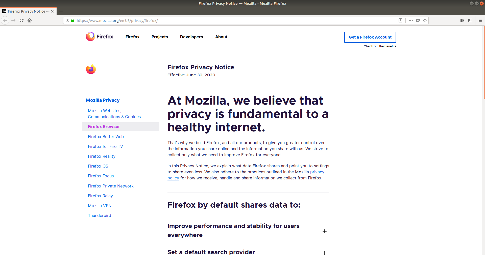
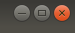
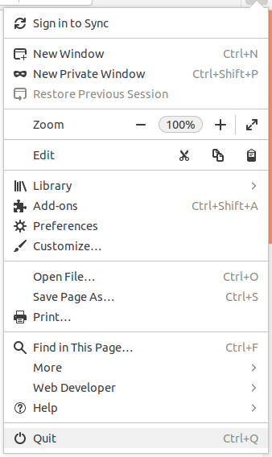
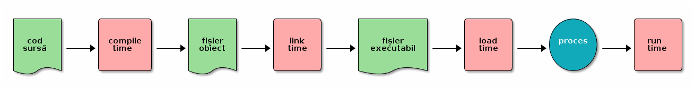

1. Pornirea și oprirea aplicațiilor¶
Aplicațiile sunt pornite de utilizator sau de sistem. Utilizatorul pornește aplicațiile pentru că are o nevoie pe care aplicația o rezolvă. De exemplu, pornește un browser web pentru a accesa Wikipedia sau pornește aplicația Spotify pentru a asculta muzică. Sistemul pornește aplicații (fără intervenția utilizatorului) pentru a asigura buna funcționare a sistemului. De exemplu sistemul pornește un client DHCP pentru a obține automat parametrii de rețea care asigură conexiunea la Internet; sau pornește o aplicație care sincronizează data sistemului cu data indicată de un server din Internet.
Utilizatorul poate porni aplicațiile folosind interfața grafică (Graphical User Interface, GUI) sau interfața în linia de comandă (Command Line Interface, CLI). În cazul interfeței grafice pornirea se face folosind elementele grafice (mouse, meniuri, iconuri de desktop). În cazul interfeței în linia de comandă pornirea se face introducând și rulând comenzi.
1.1. Pornirea și oprirea aplicațiilor grafice¶
1.1.1. Pornirea unei aplicații grafice folosind iconuri¶
Cel mai simplu mod de a porni o aplicație grafică este folosind iconuri. Folosim mouse-ul și facem click pe icon și pornim aplicația. De exemplu, în Ubuntu 18.04, pentru a porni aplicația Firefox (browser web) folosim iconul din bara de jos în stânga, la fel ca în imaginea de mai jos:
După un click pe icon aplicația va porni și o putem folosi, ca în imaginea de mai jos:
{kind=link}
Spunem că acum aplicația rulează. Rularea înseamnă că aplicația folosește resursele sistemului pentru a îndeplini nevoile utilizatorului sau sistemului.
În mod similar pornim alte aplicații care au iconuri. Aceste iconuri pot fi prezente pe bare de iconuri sau în diferite meniuri, depinzând de mediul grafic și distribuția folosită.
1.1.2. Oprirea unei aplicații grafice¶
Odată pornită, o aplicație grafică rulează, de obicei, până la o oprire explicită din partea utilizatorului. Utilizatorul poate opri o aplicație grafică în mai multe moduri:
Folosind butonul de închidere a ferestrei grafice, în general în forma unui simbol x, ca în imaginea de mai jos:
Folosind combinația de taste
Alt+F4care închide fereastra grafică, o scurtătură pentru folosirea butonului de închidere.Folosind intrarea de tip Quit / Close / Exit din meniul grafic al aplicației, ca în imaginea de mai jos, specifică aplicației Firefox:
Folosind o combinație de taste care este asociată intrării din meniul grafic al aplicației. În imaginea de mai sus, specifică Firefox, combinația de taste este
Ctrl+q. Această combinație de taste depinde de aplicație, spre deosebire combinației de tasteAlt+F4care se aplică tuturor aplicațiilor grafice.Folosind utilitarul
xkill. După ce pornim utilitarulxkill, cursorul mouse-ului capătă o formă dex. Un click pe o aplicație grafică duce la omorârea acelei aplicații.
Exercițiu: Porniți aplicația Firefox și opriți-o în toate modurile de mai sus.
1.1.3. Pornirea unei aplicații grafice folosind Alt+F2¶
Pentru a porni o aplicație grafică folosind iconuri trebuie să existe acele iconuri. Dacă iconul nu este prezent, sau dacă este greu accesibil (trebuie să căutăm prin meniuri), preferăm o altă soluție. Soluția este folosirea unui mod generic de a lansa o aplicație în interfața grafică, adică folosirea unui prompt de tip application launcher.
În mediile grafice Linux pornim un prompt de tip application launcher folosind combinația de taste Alt+F2.
Când apăsăm Alt+F2 mediul grafic prezintă un prompt în care introducem șirul care identifică aplicația.
De exemplu, pentru a porni aplicația Firefox introducem șirul firefox în prompt, ca în figura de mai jos:
{kind=link}
În urma introducerii șirului firefox în prompt, urmat de apăsarea tastei Enter, aplicația Firefox va porni.
Note
Funcționalitatea de tip application launcher, pornită folosind Alt+F2, se găsește și în alte sisteme de operare, nu doar în Linux.
În Windows pornim un prompt de tip application launcher folosind combinația de taste Windows+r.
În macOS folosim Command+Space.
În mod similar, dacă dorim să pornim o aplicație de tip terminal (GNOME Terminal), folosim Alt+F2 și introducem șirul gnome-terminal.
Note
Aplicația GNOME Terminal, pornită folosind comanda gnome-terminal, este aplicația de tip terminal specifică mediului GNOME.
Alte medii pot folosi alte aplicații de tip terminal.
De exemplu, aplicația de tip terminal pe mediul KDE este Konsole.
Sau utilizatorul poate decide instalarea unei alte aplicații de tip terminal, precum Terminator.
Șirurile firefox și gnome-terminal sunt șiruri identifică aplicațiile Firefox, respectiv GNOME Terminal.
Numim un astfel de șir o comandă; comenzile sunt șiruri introduse de utilizator pentru a porni o anumită aplicație.
1.1.3.1. Pornirea de aplicații grafice folosind Alt+F2¶
Porniți o aplicație browser de fișiere (file browser) folosind Alt+F2.
În Ubuntu 18.04 GNOME browserul de sistem de fișiere este Nautilus, identificat de șirul (comanda) nautilus.
Porniți aplicația LibreOffice, identificată de șirul (comanda) libreoffice, folosind Alt+F2.
1.1.3.2. Pornirea unei aplicații CLI folosind Alt+F2¶
Porniți aplicația ls (de listare a conținutului unui director în linia de comandă (CLI)) folosind Alt+F2.
De ce nu este afișat nimic în urma pornirii aplicației ls?
Note
Multe dintre aplicațiile în linia de comandă (precum ls) și unele aplicații grafice (precum GNOME System Monitor) au rolul de a informa utilizatorul și de a-l ajuta să întrețină, configureze, creeze și monitorizeze sistemul și aplicațiile acestora.
Numim aceste aplicații utilitare sau unelte (utility, tool).
ls este un utilitar în linia de comandă.
1.1.4. d. Pornirea unei aplicații grafice folosind linia de comandă¶
Pornirea unei aplicații grafice poate fi realizată din linia de comandă (CLI) folosind șirul care identifică aplicația, la fel ca în cazul folosirii Alt+F2.
Pornim o aplicație de terminal folosind fie iconul corespunzător fie Alt+F2 urmat de șirul (comanda) gnome-terminal.
În aplicația de terminal, pornim aplicația Firefox scriind șirul (comanda) firefox, urmat de apăsarea tastei Enter, ca în imaginea de mai jos.
Aplicația Firefox va porni.
În acest moment, în aplicația de terminal nu mai putem introduce noi comenzi pentru a porni alte aplicații.
Va trebui să oprim aplicația Firefox.
Oprim aplicația Firefox din mediul grafic (click pe butonul de închidere a ferestrei sau folosirea combinației de taste Alt+F4) sau din terminal folosind combinația de taste Ctrl+c.
1.1.4.1. Pornirea de aplicații grafice folosind linia de comandă¶
La fel ca mai sus, porniți o aplicație browser de fișiere (file browser) folosind linia de comandă.
În Ubuntu 18.04 GNOME browserul de sistem de fișiere este nautilus.
Porniți aplicația LibreOffice folosind linia de comandă.
1.1.4.2. Pornirea de aplicații CLI folosind linia de comandă¶
Porniți utilitarul ls (de listare a conținutului unui director în linia de comandă (CLI)) folosind linia de comandă.
Porniți utilitarul df (de afișare a spațiului ocupat pe disc) folosind linia de comandă.
Spre deosebire de scenariul folosirii Alt+F2, când folosim aplicații CLI în linia de comandă, mesajele vor fi vizibile.
Acest lucru se întâmplă pentru că linia de comandă înseamnă existența unui terminal unde putem vizualiza mesajele.
1.1.5. Exerciții de aprofundare¶
Porniți aplicațiile:
Shutter (identificată de șirul
shutter), aplicație de creare de screenshoturiGedit (identificată de șirul
gedit), editorMines (identificată de șirul
gnome-mines), joc de tip MinesweeperToDo (identificată de șirul
gnome-todo), aplicație de gestiune de taskuri / todo-uri
Porniți fiecare aplicație în trei moduri:
Folosind iconuri în interfața grafică. Localizați iconul în meniurile interfeței grafice.
Folosind
Alt+F2.Folosind interfața în linia de comandă (CLI).
1.1.6. Sumar: Pornirea aplicațiilor grafice¶
O aplicație grafică poate fi pornită în 3 moduri:
Folosind iconuri în interfața grafică. Iconurile se găsesc direct pe desktop sau în barele de desktop sau în meniurile și ferestrele mediului grafic. Plasarea iconurilor depinde de distribuția folosită.
Folosind un prompt de tip application launcher. Acest prompt este lansat, în Linux, de combinația de taste
Alt+F2. În Windows se folosește combinația de tasteWindows+r. În macOS se folosește combinația de tasteCommand+Space. La acest prompt se introduce șirul (comanda) care identifică aplicația.Folosind interfața în linia de comandă. La promptul terminalului se introduce șirul (comanda) care identifică aplicația.
1.2. Pornirea aplicațiilor în linia de comandă¶
1.2.1. Menținerea accesului la terminal¶
Atunci când pornim o aplicație grafică din linia de comandă, aplicația “acaparează” terminalul; nu mai putem introduce noi comenzi pentru a porni alte aplicații. Putem rezolva acest lucru prin trecerea aplicației grafice în backgroundul shellului. Adică urmăm pașii:
Pornim, în terminal, aplicația grafică (Firefox) folosind comanda
firefox. Spunem că aplicația rulează în foreground și controlează terminalul; adică nu permite rularea unei alte comenzi.În terminal folosim combinația de taste
Ctrl+zpentru a trece aplicația în background. În acest moment avem din nou promptul terminalului, ca mai jos:student@uso:~$ firefox ^Z [1]+ Stopped firefox
Dar aplicația este acum “înghețată”, nu mai răspunde. Spunem că este suspendată.
Folosim, în terminal, comanda
bg, ca mai jos:student@uso:~$ bg [1]+ firefox &
Astfel am “dezghețat” aplicația, care acum este interactivă.
În acest mod avem aplicația Firefox în rulare și avem acces la terminal să introducem noi comenzi.
Folosiți pașii de mai sus pentru a porni și aplicația LibreOffice din linie de comandă și să mențineți accesul la terminal.
Note
Vom afla mai multe despre background și suspendarea proceselor în Oprirea și suspendarea proceselor. Semnale.
1.2.2. Pornirea aplicațiilor în linie de comandă¶
Aplicațiile în linie de comandă nu au nevoie de mediu grafic. Interacțiunea lor cu utilizatorul se face prin intermediul terminalului: în terminal se introduc informații de la utilizator și tot în terminal se afișează rezultatele rulării aplicațiilor. Cel mai adesea numim aplicațiile în linie de comandă utilitare sau, pur și simplu, comenzi.
Pentru a porni aplicații / utilitare în linia de comandă, folosim comenzi care conțin numele utilitarului urmate, eventual, de argumente.
Astfel, pentru a porni utilitarele ls sau ps folosim comenzi precum cele de mai jos, simple sau cu argumente:
student@uso:~$ ls
Desktop Documents Downloads examples.desktop Music Pictures Public snap Templates uso.git Videos vm-actions-log.txt
student@uso:~$ ls -l
total 60
drwxr-xr-x 2 student student 4096 Aug 6 2018 Desktop
drwxr-xr-x 3 student student 4096 Aug 20 2018 Documents
drwxr-xr-x 2 student student 4096 Aug 6 2018 Downloads
-rw-r--r-- 1 student student 8980 Aug 6 2018 examples.desktop
drwxr-xr-x 2 student student 4096 Aug 6 2018 Music
drwxr-xr-x 2 student student 4096 Aug 8 11:52 Pictures
drwxr-xr-x 2 student student 4096 Aug 6 2018 Public
drwxr-xr-x 3 student student 4096 Aug 8 09:02 snap
drwxr-xr-x 2 student student 4096 Aug 6 2018 Templates
drwxr-xr-x 14 student student 4096 Aug 20 2018 uso.git
drwxr-xr-x 2 student student 4096 Aug 6 2018 Videos
-rw-r--r-- 1 student student 4827 Aug 21 2018 vm-actions-log.txt
student@uso:~$ ps
PID TTY TIME CMD
3370 pts/4 00:00:00 bash
7979 pts/4 00:00:00 ps
student@uso:~$ ps -f
UID PID PPID C STIME TTY TIME CMD
student 3370 3369 0 08:55 pts/4 00:00:00 -bash
student 7982 3370 0 13:17 pts/4 00:00:00 ps -f
1.2.3. Aplicații interactive în linia de comandă¶
Utilitarele ls și ps pe care le-am folosit mai sus pornesc, rulează, afișează informații utilizatorului în terminal și apoi se opresc.
Alte utilitare în linia de comandă sunt interactive.
Adică folosesc date introduse de utilizator și își încheie execuția doar după introducerea acestor date sau la comanda utilizatorului.
De exemplu, utilitarul less, folosit pentru afișarea paginată a conținutului unui fișier, este interactiv.
Îl folosim ca mai jos:
student@uso:~$ less /etc/services
O dată pornit utilitarul, putem controla afișarea sa folosind tastele săgeți sau alte combinații de taste precum Ctrl+b (pagină sus) sau Ctrl+f (pagină jos).
Pentru a opri utilitarul folosim tasta q (quit) și obținem controlul terminalului pentru a introduce noi comenzi.
Porniți în linia de comandă aplicația interactivă vim pentru a edita fișierul ~/.bashrc.
Opriți aplicația folosind combinația de taste <Esc>:q! urmată de Enter.
1.2.4. Oprirea forțată a aplicațiilor în linia de comandă¶
Se poate întâmpla ca o aplicație în linia de comandă să ruleze pentru prea mult timp sau să se blocheze.
Caz în care dorim să o oprim.
Soluția de avarie este să închidem fereastra de terminal, lucru care, de obicei, închide și aplicația.
Soluția mai bună este să închidem doar aplicația.
Acest lucru îl facem folosind combinația de taste Ctrl+c care oprește aplicația care rulează în terminal.
Acest lucru poate fi realizat și pentru aplicații grafice, așa cum am văzut mai sus.
De exemplu, dacă folosim comanda sleep 100 care se va bloca pentru 100 de secunde, o vom opri folosind Ctrl+c ca mai jos:
student@uso:~$ sleep 100
^C
student@uso:~$
Note
Pentru anumite aplicații combinația de taste Ctrl+c poate să nu funcționeze.
În acest caz putem folosi combinația de taste Ctrl+\, mai puternică.
Dacă nici Ctrl+\ nu funcționează, va trebui să trimitem aplicației un semnal mai puternic care să o oprească.
Vom discuta despre semnale în Oprirea și suspendarea proceselor. Semnale.
1.2.4.1. Oprire forțată de aplicații¶
Folosiți următoarele comenzi care pornesc aplicații care durează mult și opriți-le forțat:
ls -R /usr: pentru a afișa recursiv conținutul directorului/usrdd if=/dev/zero of=/dev/null: pentru a consuma timp de procesor (busy waiting)watch ps: pentru a monitoriza procesele din terminalul curent
1.2.5. Sumar: Pornirea aplicațiilor în linia de comandă¶
Aplicațiile în linia de comandă sunt adesea numite utilitare.
Un utilitar în linia de comandă este pornit cu ajutorul unei comenzi.
O comandă este un șir care conține numele utilitarului urmat, dacă este cazul, de argumente.
Aplicația este pornită când se tastează Enter după șirul care reprezintă comanda.
De multe ori, aplicațiile în linia comandă execută acțiuni, afișează un mesaj în terminal și se opresc.
Unele aplicații în linia de comandă sunt interactive și trebuie oprite explicit de utilizator folosind comenzi sau combinații de taste interne.
Dacă o aplicație în linia de comandă se blochează sau durează foarte mult, poate fi oprită folosind combinația de taste Ctrl+c.
O aplicație grafică pornită din terminal va “acapara” terminalul și acesta nu va accepta alte comenzi.
Pentru aceasta putem trece aplicația grafică în background, folosind combinația de taste Ctrl+z urmată de comanda bg.
1.3. Aplicații, executabile și procese¶
1.3.1. Identificarea fișierului executabil al unei aplicații¶
Pornirea unei aplicații înseamnă că se alocă resursele sistemului (procesor, memorie, dispozitive de intrare/ieșire) pentru a rula aplicația. Aplicația are asociat un fișier care conține codul (instrucțiunile) și datele aplicației. Codul aplicației este executat, de aceea acest fișier se numește fișier executabil. Acest fișier executabil este încărcat în memoria sistemului și codul este executat; din acest moment spunem că aplicația rulează.
De exemplu aplicația Firefox (browser web) are asociat fișierul executabil /usr/bin/firefox; aplicația Vim (editor) are asociat fișierul executabil /usr/bin/vim; aplicația LibreOffice (suită office) are asociat fișierul executabil /usr/bin/libreoffice.
Putem identifica fișierul executabil al unei aplicații folosind comanda which urmată de comanda pentru pornirea aplicației ca mai jos:
student@uso:~$ which firefox
/usr/bin/firefox
student@uso:~$ which vim
/usr/bin/vim
student@uso:~$ which libreoffice
/usr/bin/libreoffice
1.3.2. Vizualizarea proceselor¶
O aplicație care rulează, adică folosește resursele sistemului pentru a executa cod și a prelucra date, se numește proces. Atunci când pornim o aplicație se creează un proces; atunci când oprim aplicația sau își încheie execuția ne referim la încheierea execuției procesului.
Putem vizualiza aplicațiile care rulează (procesele) în mediul grafic folosind, în mediul GNOME, aplicația GNOME System Monitor 1.
Pornim aplicația folosind Alt+F2 și comanda gnome-system-monitor.
Procesele sunt afișate în tabul Processes al aplicației ca în imaginea de mai jos:
Pentru a vizualiza procesele în linia de comandă folosim utilitarul ps ca mai jos:
student@uso:~$ ps
PID TTY TIME CMD
3370 pts/4 00:00:00 bash
3912 pts/4 00:00:00 ps
student@uso:~$ ps -e
PID TTY TIME CMD
1 ? 00:00:02 systemd
2 ? 00:00:00 kthreadd
4 ? 00:00:00 kworker/0:0H
6 ? 00:00:00 mm_percpu_wq
7 ? 00:00:00 ksoftirqd/0
8 ? 00:00:00 rcu_sched
[...]
Nu detaliem aici rezultatul rulării comenzilor de mai sus.
Vom afla mai multe despre folosirea ps și a altor aplicații de vizualizare a proceselor în Investigarea proceselor.
1.3.3. Fazele utilizării unei aplicații¶
Pentru utilizarea sa, aplicația trece prin două faze.
Faza pornirii aplicației, adică a încărcării fișierului executabil în memorie și a creării procesului, se numește loading sau load-time.
Faza rulării procesului se numește running sau run-time.
În faza de load-time se alocă resursele necesare pentru pornirea procesului, se creează procesul și se pornește execuția sa.
În termeni de programator, atunci se începe execuția codului programului corespunzător procesului, uzual de la funcția main() a acestuia.
Această faza nu este vizibilă utilizatorului.
Utilizatorul folosește un icon sau introduce o comandă și apoi vede aplicația pornită ca proces.
În faza de run-time procesul nou creat folosește resursele sistemului (procesor, memorie, intrare/ieșire) pentru a îndeplini nevoile utilizatorului sau ale sistemului. Această fază este cea vizibilă utilizatorului, este faza în care acesta folosește efectiv aplicația.
Aceste două faze vin în continuarea celor două faze prezentate în capitolul (TODO: link la capitolul Dezvoltarea aplicațiilor).
faza compilării (compiling, compile-time) în care codul sursă al programului este compilat în cod obiect
faza legării (linking, link-time) în care mai multe fișiere cod obiect sunt legate într-un fișier executabil
Fișierul executabil obținut la finalul fazei de link-time este asociat aplicației și este folosit pentru pornirea procesului.
Avem, astfel, imaginea completă a creării și rulării unei aplicații, din momentul scrierii codului său sursă până la folosirea sa de utilizator, ca mai jos:
1.3.4. Sumar: Aplicații, executabile, procese¶
O aplicație este pornită dintr-un fișier executabil care conține codul (instrucțiunile) și datele aplicației. O aplicație care rulează este numită proces. Procesul folosește resursele sistemului (procesor, memorie, intrare/ieșire) pentru a executa codul și pentru a prelucra date specifice aplicației. Faza pornirii aplicației, adică a încărcării fișierului executabil în memorie și a creării procesului, se numește loading sau load-time. Faza rulării procesului se numește running sau run-time.
1.4. Scenarii avansate¶
1.4.1. Studiu de caz: Emacs: Aplicație hibridă¶
Aplicația Emacs (un editor) poate rula cu interfața grafică și cu interfață în linia de comandă.
Dacă pornim aplicația Emacs în linia de comandă, folosind comanda emacs, se va crea un proces cu interfața grafică, așa cum apare în imaginea de mai jos:
Putem opta să folosim interfața în linia de comandă a aplicației Emacs, nu interfața grafică, din rațiuni de resurse consumate, pornire mai rapidă sau interfață universală.
Pentru a face acest lucru, folosim comanda emacs -nw (nw de la no window system), ca mai jos:
Aplicația este interactivă.
În interfața grafică poate fi oprită folosind butonul de închidere a ferestrei sau combinația de taste Alt+F4.
În linia de comandă (și în interfața grafică) poate fi oprită folosind combinația de taste specifică pentru oprirea aplicației: Ctrl+x urmat de Ctrl+c.
1.4.2. Pornirea aplicațiilor grafice în modul headless¶
Atunci când lucrăm la distanță e posibil să nu avem acces facil la interfață grafică. Sau, chiar când lucrăm pe sistemul local, nu vrem să complicăm mediul de lucru cu o încă o aplicație grafică. Dorim să rulăm o aplicație în background fără interfață grafică. Nu interacționăm cu aplicația direct, cu butoane, meniuri, clickuri, ci indirect, prin comenzi specializate. Anumite aplicații au acest mod, numit mod headless.
De exemplu, Firefox are modul headless. Acest mod nu este util pentru navigarea web, nefiind interactiv. Dar este folosit pentru testarea sa automată folosind, de exemplu, Selenium.
Pentru pornirea Firefox în modul headless folosim, într-un terminal, comanda:
student@uso:~$ firefox -headless
*** You are running in headless mode.
Aplicația Firefox este pornită, fără interfață grafică. Putem vedea existența unui proces Firefox rulând, într-un alt terminal, comanda:
student@uso:~$ ps -e | grep firefox
9897 pts/5 00:00:02 firefox
Pentru a opri procesul Firefox pornit în modul headless folosim, în primul terminal, combinația de taste Ctrl+c.
1.4.2.1. Folosirea Inkscape fără interfață grafică¶
Aplicația Inkscape este folosită pentru crearea și editarea de imagini format SVG (Scalable Vector Graphics). Inkscape nu are propriu zis un mod headless dar poate fi folosită în mod neinteractiv pentru exportarea fișierelor într-un anumit format și chiar editarea acestora 2.
Note
Aplicația trebuie instalată dacă nu există deja. Pe sistemele Debian/Ubuntu folosim comenzi precum cele de mai jos:
student@uso:~$ sudo apt update
student@uso:~$ sudo apt -y install inkscape
Vom detalia instalarea aplicații în Instalarea și dezinstalarea aplicațiilor.
De exemplu, pentru a converti o imagine SVG în format PDF folosim o comandă precum cea de mai jos:
student@uso:~/uso-lab-book$ inkscape chapters/app-install/support/Tux.svg --export-pdf Tux.pdf
student@uso:~/uso-lab-book$ file Tux.pdf
Tux.pdf: PDF document, version 1.4
În mod similar, pentru a converti o imagine SVG în format PNG folosim o comanda precum cea de mai jos:
student@uso:~/uso-lab-book$ inkscape chapters/app-install/support/Tux.svg --export-png Tux.png
Background RRGGBBAA: ffffff00
Area 0:0:299.149:354.188 exported to 299 x 354 pixels (96 dpi)
Bitmap saved as: Tux.png
student@uso:~/uso-lab-book$ file Tux.png
Tux.png: PNG image data, 299 x 354, 8-bit/color RGBA, non-interlaced
1.4.2.2. Folosirea Emacs Daemon¶
Warning
Acest exercițiu are dificultate sporită.
Emacs este o aplicație consumatoare de resurse. Pentru a reduce timpul de pornire, este ideal să fie pornită o singură dată și apoi să fie folosită acea instanță. Pentru a nu încărca interfața grafică, Emacs are o formă de server, numită Emacs Daemon. În forma de server, procesul Emacs este pornit dar fără interfață grafică. Pentru a folosi Emacs, se folosește o aplicație minimală (lightweight) numită emacsclient.
Realizați următoarele:
Porniți Emacs Daemon.
Verificați folosind
pssau GNOME System Monitor că procesul Emacs există.Conectați-vă la Emacs Daemon folosind emacsclient.
Deconectați-vă de la Emacs Daemon.
Conectați-vă din nou la Emacs Daemon.
Opriți Emacs Daemon.
Verificați folosind
pssau GNOME System Monitor că procesul Emacs nu mai există.
Note de subsol
- 1
Aplicația GNOME System Monitor este similară aplicației Task Manager din Windows.
- 2
https://wiki.inkscape.org/wiki/index.php/Using_the_Command_Line